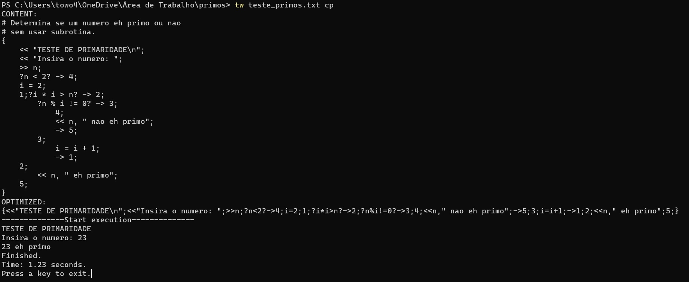

-
Atribuição, leitura e impressão
-
Desvio direto e desvio condicional
-
Usando desvios para simular laços de repetição
-
Laço do...while:
-
Laço while:
-
Laço for:
-
Uso de subrotinas
-
TW/Fluxus no terminal
-
Baixe o interpretador no link dado.
-
Crie uma pasta chamada "primos" na área de trabalho e copie o arquivo tw.exe para ela.
-
Crie um arquivo de texto na pasta "primos" e dê o nome de "teste_primos".
-
Digite o código abaixo no arquivo de texto "teste_primos".
-
Abra a pasta "primos" na linha de comandos e execute "tw teste_primos.txt".
-
Execute agora "tw teste_primos.txt c".
-
Execute agora "tw teste_primos.txt p".
-
Execute agora "tw teste_primos.txt cp".

-
Crie uma subpasta na pasta "primos" e dê o nome de "modulos".
-
Crie um arquivo de texto dentro da pasta "modulos" chamado "primalidade".
-
Digite o código abaixo no arquivo de texto "primalidade".
-
Crie um arquivo de texto dentro da pasta "primos" chamado "teste_primos2".
-
Digite o código abaixo no arquivo de texto "teste_primos2".
-
Execute no terminal "tw teste_primos2.txt c".
-
Crie os arquivos de texto dentro da pasta "modulos" chamados "true" e "false".
-
Digite o código abaixo no arquivo de texto "true".
-
Digite o código abaixo no arquivo de texto "false".
-
Agora crie um arquivo na pasta "primos" chamado "teste_primos3".
-
Digite o código abaixo no arquivo de texto "teste_primos3".
-
Execute na linha de comando "tw teste_primos3.txt"
-
Execute na linha de comando "tw teste_primos3.txt c"
TW/Fluxus
TW/Fluxus é uma linguagem imperativa, estruturada e procedural. Os comandos são curtos, baseados em poucos símbolos intuitivos, alguns comuns à outras linguagens. Ela visa simular, de maneira escrita, os fluxogramas.
Abaixo mostraremos os comandos básicos e como simular as principais estruturas de seleção, estruturas de repetição e o uso de subrotinas. Os comentários da linguagem ficam em linhas iniciadas por #.
Para atribuir, ler e imprimir conteúdo numérico, fazemos dessa forma.
{
# Atribui 3 à variável a.
a = 3;
# Lê um valor numérico em b.
>> b;
# Imprime o valor de a e b separados
# por um espaço em branco.
<< a, " ", b;
}
Para atribuir, ler e imprimir conteúdo de texto, fazemos da forma abaixo.
{
# Atribui "amor" à variável $a.
$a = "amor";
# Lê um um conjunto de caracteres em $b.
>> $b;
# Imprime o valor de $a e $b separados
# por um espaço em branco.
<< $a, " ", $b;
}
Algumas manipulações podem ser em variáves com índices. Cada variável numérica pode ter o índice de 0 a 999999. O uso dos índices pode simular um array unidimensional de até 1000000 de elementos ou, por exemplo, um bidimensional de 1000 x 1000 ou um tridimensional de 100 x 100 x 100, o que já é um tamanho suficiente para a maioria dos casos.
Observe um exemplo de uso de índices em variáveis numéricas.
{
A = 1;
# A[0] é igual a A, logo A passará a ser 2.
# As variávels não são sensíveis ao caso,
# portanto A ou a é a mesma coisa.
A[0] = 2;
# Imprime "2 2 2".
<< A, " ", A[0], " ", a;
# Lê um valor em A[10] após pular
# linha e escrever "A[10] = ".
<< "\nA[10] = ";
>> A[10];
# Imprime o valor de A[10].
<< A[10];
}
As variáveis de texto, quando tratadas com índices, representam caracteres únicos. O maior índice para uma variável de texto é 99999. Ou seja, o tamanho máximo de uma string é 100000.
O exemplo abaixo ilustra esses casos.
{
# Atribui a palavra "Amor"
# à variável $a.
$a = "Amor";
# Imprime o valor de $a
# e pula linha.
<< $a, "\n";
# troca a primeira letra
# de "Amor" por "E".
$a[0] = "E";
# troca a última letra
# de "Amor" por "s".
$a[3] = "s";
# Imprime "Emos".
<< $a;
}
Uma string, quando atribuída ou lida para um caractere, tem apenas sua primeira letra guardada de fato. Expressões numéricas, quando atribuídas a um caractere, se convertem ao caractere de valor ASCII da expressão. Por exemplo:
{
# Será interpretado como 'b',
# o caractere ASCII de número 98.
$c[4] = 72 - 65 + 91;
<< $c[4], "\n";
# Lê apenas o primeiro caractere
# de uma string em $t[3].
>> $t[3];
# Apenas o único caractere
# de $t será impresso.
<< $t[3], "\n";
# Apenas o primeiro caractere
# 'A' será atribuído.
$b[10] = "Amor";
<< $b[10];
}
As expressões numéricas que são mistas com caracteres só serão impressas na forma numérica, onde o caractere terá seu valor tomado como o da tabela ASCII. Por exemplo:
{
# imprime 97 + 61 = 158, pois pois 97 é
# o valor do caractere 'a' na tabela ASCII.
<< "a" + 61, "\n";
# Lê uma string em $t.
>> $t;
# Imprime a subtração do valor ASCII do primeiro
# caractere de $t com 12.
<< $t - 12, "\n";
# Imprime 65 * 2 = 130, pois 65 é o valor ASCII de 'A',
# primeiro caractere de "Amor".
<< "Amor" * 2;
}
Todo código é composto por uma sequência de declarações finalizadas e separadas por ponto e vírgula (;). Para desviar a execução da sequência e saltar para comandos posteriores ou anteriores no código, podemos fazer isso de forma direta ou condicional marcando rótulos numéricos em posições específicas.
O desvio direto (goto) é feito por "-> rótulo", onde rótulo é um número real positivo. Rótulos podem ser acrescentados indefinidamente e serão ignorados pela sequência de execução caso não exista um desvio para eles.
{
# Atribui 2 à variável a.
a = 2;
# Um rótulo inútil, pois não há desvio para ele.
23;
# Desvia para o rótulo 1.
-> 1;
# Este comando não será executado. Logo,
# a não será incrementado para 3.
a = a + 1;
# O desvio anterior envia para essa posição com rótulo 1.
1;
# Será impresso 2.
<< a;
}
Para o desvio condicional usamos "?expressão lógica? -> rótulo". As expressões lógicas são avaliadas como verdadeira (1) ou falsa (0) e, quando verdadeiras, a execução é desviada para a posição do rótulo. Caso a expressão lógica seja falsa, o código continua na sequência original escrita.
{
# Lê um número em a.
>> a;
# Se a >= 5, desvia a execução para o rótulo 1.
?a >= 5? -> 1;
# Caso a não seja maior ou igual a 5, imprime
# seu valor seguido do texto " é menor que 5".
<< a, " é menor que 5";
# Desvia para o rótulo 2 para
# terminar a execução.
-> 2;
1;
# Caso desvie para o rótulo 1, imprime seu
# valor seguido do texto " é maior ou igual a 5".
<< a, " é maior ou igual a 5";
2;
}
A combinação dos desvios diretos e condicionais simula tudo que pode ser representado por um fluxograma, onde os rótulos são os nós para onde as setas desviam. Por isso, qualquer estrutura representável por fluxograma pode ser simulada combinando esses dois comandos básicos.
Abaixo mostraremos estas representações com comentários linha a linha da mesma implementação, mas na linguagem C.
# Imprime os dígitos de 0 a 9.
#-TW/Fluxus---------#-C----------------------
# #include < stdio.h >
{ # int main() {
i = 0; # int i = 0;
#
1; # do {
<< i; # printf("%d", i);
i = i + 1; # i++;
?i < 10? -> 1; # } while (i < 10);
} # }
# Calcula a média de uma quantidade indefinida
# de números com valor de saída (-1).
#-TW/Fluxus---------#-C----------------------
# #include < stdio.h >
{ # int main() {
s = 0; # int s = 0;
i = 0; # int i = 0;
# int n;
>> n; # scanf("%d", &n);
1; #
?n == -1? -> 2; # while (n != -1) {
i = i + 1; # i++;
s = s + n; # s += n;
>> n; # scanf("%d", &n);
-> 1; #
2; # }
<< s / i; # printf("%d", s / i);
} # }
# Calcula a média de 10 números.
#-TW/Fluxus-------------#-C----------------------
# #include < stdio.h >
{ # int main() {
s = 0; # int s = 0;
# int n, i;
i = 0; #
1; ?i >= 10? -> 2; # for (i = 0; i < 10; i++) {
>> n; # scanf("%d", &n);
s = s + n; # s += n;
i = i + 1; #
-> 1; #
2; # }
<< s / i; # printf("%d", s / i);
} # }
Todo programa é executado tendo início em "{" e terminando em "}". É possível dividir o código em módulos e chamá-los como subrotinas. O comando necessário para isso é "=> rótulo". Funciona como um desvio, porém, o rótulo de uma subrotina deve estar fora dos limites do programa principal, isto é, após "}". No final de cada subrotina é necessário incluir o comando de retorno "<-" para que a execução volte aos limites do programa principal para o ponto logo após onde a subrotina foi chamada.
Para ilustrar o uso de subrotinas, vamos mostrar um programa que verifica se um número é primo ou composto. Este programa estará em três versões, onde duas delas usam subrotinas com boas práticas.
# Determina se um número é primo ou não
# sem usar subrotina.
{
<< "TESTE DE PRIMARIDADE\n";
<< "Insira o número: ";
>> n;
?n < 2? -> 4;
i = 2;
1;?i * i > n? -> 2;
?n % i != 0? -> 3;
4;
<< n, " não é primo";
-> 5;
3;
i = i + 1;
-> 1;
2;
<< n, " é primo";
5;
}
O trabalho de impressão dos resultados podem ser atribuídos à duas subrotinas distintas. Neste exemplo, uma é chamada no rótulo 100, para imprimir que não é primo, e outra é chamada no rótulo 200, para imprimir que é primo.
# Determina se um número é primo ou não, chamando
# subrotinas para imprimir os resultados.
{
<< "TESTE DE PRIMARIDADE\n";
<< "Insira o número: ";
>> n;
?n < 2? -> 4;
i = 2;
1;?i * i > n? -> 2;
?n % i != 0? -> 3;
4;
# Chama a subrotina 100.
=> 100;
-> 5;
3;
i = i + 1;
-> 1;
2;
# Chama a subrotina 200.
=> 200;
5;
}
# Rótulo da subrotina 100.
100;
# Imprime que não é primo.
<< n, " não é primo";
# Retorna par o programa principal.
<-;
# Rótulo da subrotina 200.
200;
# Imprime que é primo.
<< n, " é primo";
# Retorna par o programa principal.
<-;
O próprio processo de verificação de primalidade pode ser feito por uma subrotina. Porém, neste caso, uma variável global deve ser utilizada como forma de comunicação entre o programa principal e a subrotina.
Observe no exemplo anterior que os rótulos 100 e 200 foram escolhidos como rótulos de subrotinas. Essa prática de escolher rótulos grandes, dos quais o código principal não ancalçaria, é importante para que não haja sobreposição ou ambiguidade nos desvios do programa.
Da mesma forma, toma-se como variáveis globais de entrada e saída das subrotinas as variáveis com índices grandes e significativos, como por exemplo, o índice com o mesmo valor do rótulo da subrotina. Os rótulos internos da implementação da subrotina também devem ser grandes e inatingidos no programa principal. Pode-se usar números concatenados com o rótulo da subrotina. Isso evita o uso inadvertido na subrotina de uma variável do programa principal e vice-versa.
Essa prática torna as subrotinas mais portáveis e reutilizáveis em outros códigos. Porém, sempre conheça a implementação das subrotinas feitas por terceiros, para se certificar de que não há conflitos de variáveis com o seu código, pois TODAS AS VARIÁVELS EM TW/Fluxus SÃO GLOBAIS.
# Verifica se um número é primo ou não
# usando uma subrotina de verificação
# com variável global de comunicação.
{
<< "TESTE DE PRIMARIDADE\n";
<< "Insira o número: ";
>> n;
p[100] = n;
=> 100;
?p[100]? -> 1;
<< n, " não é primo";
-> 2;
1;
<< n, " é primo";
2;
}
# Verifica se um número é primo ou não.
# Entrada em p[100]. (número a ser testado)
# Retorno em p[100]. (1 se for primo e 0 se não for)
# Variável auxiliar i[100].
# Rótulos internos 1100, 2100, 3100 e 4100.
100;
?p[100] < 2? -> 4100;
i[100] = 2;
1100;
?i[100] * i[100] > p[100]? -> 2100;
?p[100] % i[100] != 0? -> 3100;
4100;
p[100] = 0;
<-;
3100;
i[100] = i[100] + 1;
-> 1100;
2100;
p[100] = 1;
<-;
A linguagem TW/Fluxus foi originalmente desenvolvida em C para ser executada no terminal de comandos de uma máquina. Nessa versão, cujo interpretador pode ser baixado clicando aqui, o arquivo principal é o executável tw.exe.
Abra no terminal a pasta onde se encontra o arquivo tw.exe e execute o comando tw. Irá aparecer no terminal o seguinte texto.
tw version: x.x.x
Use: tw < file_path > [< options >]
Options availables:
c: print program content text.
p: print program content optimized.
cp: print text and optimized program content.
Ou seja, para executar um código, você deve digitar "tw" e o endereço do código fonte. É opcional acrescentar após o endereço do arquivo as letras "c" para imprimir o conteúdo do programa por você formatado; "p" para imprimir o conteúdo otimizado do programa sem quebra de linhas, comentários e espaços em branco (a versão que será interpretada); e "cp" para imprimir os dois tipos de conteúdo.
Dica: faça uma cópia do arquivo tw.exe para as pastas onde ficarão os códigos fontes. Isso simplifica a entrada do endereço.
Outra coisa que é possível fazer usando o TW/Fluxus no terminal é incluir as subrotinas em arquivos diferentes e linkar ou importar elas para o código fonte principal através do símbolo @. Abaixo será dado um exemplo que ilustrará todas essa informações.
primos/
|
+--- tw.exe
primos/
|
+--- tw.exe
|
+--- teste_primos.txt
Observação: TW/Fluxus não possui extensão, pois ele executa interpretando os caracteres presentes no texto do código fonte. Portanto, pode ser .txt, .doc, .rtx ou qualquer outro formato de arquivo de texto. Ou ainda um arquivo sem extensão definida ou criada pelo próprio usuário.
# Determina se um numero eh primo ou nao
# sem usar subrotina.
{
<< "TESTE DE PRIMARIDADE\n";
<< "Insira o numero: ";
>> n;
?n < 2? -> 4;
i = 2;
1;?i * i > n? -> 2;
?n % i != 0? -> 3;
4;
<< n, " nao eh primo";
-> 5;
3;
i = i + 1;
-> 1;
2;
<< n, " eh primo";
5;
}
Observe que aparecerá o conteúdo do código completo com a formatação original.
O interpretador executa o código otimizado verificando cacartere por caractere. Observe que o código está todo em uma única linha entre {}, sem espaço em branco e sem comentários.
Com esta opção, os dois formatos de conteúdo do código são mostrados.
Os passos abaixo ilustrarão como funciona a linkagem de códigos em arquivos diferentes.
primos/
|
+--- tw.exe
|
+--- teste_primos.txt
|
+--- modulos/
primos/
|
+--- tw.exe
|
+--- teste_primos.txt
|
+--- modulos/
|
+--- primalidade.txt
# Verifica se um numero eh primo ou nao.
# Entrada em p[100]. (numero a ser testado)
# Retorno em p[100]. (1 se for primo e 0 se nao for)
# Variavel auxiliar i[100].
# Rotulos internos 1100, 2100, 3100 e 4100.
100;
?p[100] < 2? -> 4100;
i[100] = 2;
1100;
?i[100] * i[100] > p[100]? -> 2100;
?p[100] % i[100] != 0? -> 3100;
4100;
p[100] = 0;
<-;
3100;
i[100] = i[100] + 1;
-> 1100;
2100;
p[100] = 1;
<-;
Essa subrotina 100 acima verifica se o valor atribuído a p[100] é primo ou não. Ela configura p[100] para 1 caso seja primo e para 0 caso não seja. Deixando essa função separada em um arquivo independente, você pode importá-la em qualquer código que precisar desse tipo de verificação de primalidade.
Vamos criar um código para usar esse módulo.
primos/
|
+--- tw.exe
|
+--- teste_primos.txt
|
+--- teste_primos2.txt
|
+--- modulos/
|
+--- primalidade.txt
# Verifica se um numero eh primo ou nao
# usando uma subrotina de verificacao
# com variavel global de comunicacao.
{
<< "TESTE DE PRIMARIDADE\n";
<< "Insira o numero: ";
>> n;
p[100] = n;
=> 100;
?p[100]? -> 1;
<< n, " nao eh primo";
-> 2;
1;
<< n, " eh primo";
2;
}
# Inclua o link no local onde o codigo
# deveria ficar.
@modulos/primalidade.txt
Como o conteúdo do módulo se trata de uma função, ele deve ser incluído após o }. A inclusão do link usando @ em um local, faz com que o interpretador procure o conteúdo desse novo arquivo e escreva nesse local, dando procedimento ao resto do código depois.
Vamos executar teste_primos2 usando a opção c para ver como o interpretador completou o código principal com o conteúdo da função 100.
Reforçamos que, diferente de outras liguagens onde a importação de código é feita no início (cabeçalho), em TW/Fluxus a importação de código é feita no local onde o trecho do arquivo deveria ficar. É como completar um quebra-cabeça.
Vamos criar em arquivos separados os comandos de impressão e inclui-los nos locais adequados usando @.
primos/
|
+--- tw.exe
|
+--- teste_primos.txt
|
+--- teste_primos2.txt
|
+--- modulos/
|
+--- primalidade.txt
|
+--- true.txt
|
+--- false.txt
<< n, " eh primo";
Tem o único objetivo de imprimir que um número guardado na variável n é primo.
<< n, " nao eh primo";
Tem o único objetivo de imprimir que um número guardado na variável n não é primo.
primos/
|
+--- tw.exe
|
+--- teste_primos.txt
|
+--- teste_primos2.txt
|
+--- teste_primos3.txt
|
+--- modulos/
|
+--- primalidade.txt
|
+--- true.txt
|
+--- false.txt
# Verifica se um numero eh primo ou nao
# usando uma subrotina de verificacao
# com variavel global de comunicacao.
{
<< "TESTE DE PRIMARIDADE\n";
<< "Insira o numero: ";
>> n;
p[100] = n;
=> 100;
?p[100]? -> 1;
@modulos/false.txt
-> 2;
1;
@modulos/true.txt
2;
}
# Inclua o link no local onde o codigo
# deveria ficar.
@modulos/primalidade.txt
Execute o mesmo código com a opção c para ver como o conteúdo dos módulos se encaicham nos locais onde eles foram linkados.